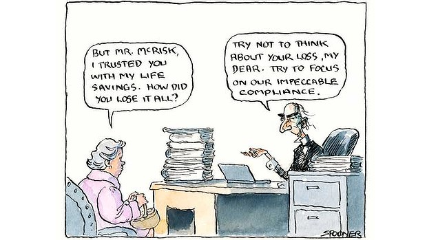

Here's this Wednesday's Age and SMH column.

Illustration: John SpoonerIn the last fortnight the Government has ticked one of its boxes for next year’s election, launching policies to tackle over-regulation. And Treasury Secretary Martin Parkinson was reported as intimating that more regulation was needed to address risks posed by Australia’s DIY super.
The contrast between minimising regulation ‘in general’ while expanding it in particular illustrates Lord Acton’s dictum about rowing as a preparation for public life – enabling one to face in one direction while travelling in the other.
The Government is imposing stronger disciplines for regulators to perform regulatory impact analysis (RIA) before regulating. But we’ve been strengthening compliance on RIAs for two decades now. And it doesn’t work. Years ago the British Chambers of Commerce diagnosed the problem in its publication “Deregulation or Déjà Vu?”
Both Conservative and Labour administrations approach deregulation with apparent enthusiasm, learn little or nothing from previous efforts and have little if anything to show from each initiative.
Our model of regulation review was a noble try at its birth late last century as Western governments rationalised the detritus of decades of ad hoc political favouritism and regulatory capture. But it failed even then. Bureaucracy and politics rewards ‘can do’ types, so regulatory impact analysis became a box ticking exercise, obeyed in the letter, but not in spirit.
Today with much of the purely deregulatory work done – with governments vacating the regulation of airline schedules and shopping hours – the quality and responsiveness of regulation matters more than its quantity. But regulating well involves finessing the micro-detail – as does running a business or building software – and economists’ cost/benefit or regulatory impact analysis doesn’t and can’t stoop to the micro-detail. Neither does business or political advocacy against over-regulation.
Take the Treasury Secretary’s concerns on DIY super. He’s right: allowing unsophisticated investors largely free rein in managing their investment portfolio is a time bomb. Ask 34-year-old paraplegic, Alison Cook, whose story was reported this weekend. Her DIY super fund lost two thirds of her accident compensation payout – nearly half a million dollars – through ridiculously risky investments that earned her advisor juicy commissions.
Yet DIY super isn’t too lightly regulated. It’s too heavily regulated. It’s only a time bomb because it’s exquisitely badly regulated.
Most self-managed super funds (SMSFs) comprise a diversified pool of ‘vanilla’ assets – shares, bonds and cash – managed by families for their retirement. So, unsurprisingly, most are sensibly self-managed. But incredibly, the regulation governing DIY funds is a cut-down version of that governing multi-billion dollar funds.
To establish a DIY fund one first needs a Trust Deed – usually purchased from a city law firm (mine runs to 64 pages and sits, unread, on file). And while Mum and/or Dad go trustee and manage their own portfolio, their accountant manages ‘compliance’, drafting resolutions that trustees bemusedly sign. Then another professional firm audits the fund to comply with the Superannuation Industry (Supervision) Act 1993 and regulations.
For simple ‘vanilla’ funds all this could be handled at a fraction of the cost, as our taxes are, via self-assessment subject to risk-targeted auditing by the ATO.
At the very least shouldn’t we accept Recommendation 30 of a 2007 Joint Parliamentary Committee, that where funds consistently comply, they revert to five yearly rather than annual auditing? One report signatory, Penny Wong, now finds herself the Minister for Finance and (ahem) . . . Deregulation.
But all the gold plating – which on my rough figuring lowers returns by around $200,000 over the forty-year life of an SMSF – isn’t the worst of it. Even as SMSFs consume billions in professional services per year, horror stories are increasingly common. Meanwhile, the auditors tick boxes – just like the regulators.
Each year my fund is audited to comply with Sections 52(2)e, 52(2)d, 62, 65, 66, 67, 69-71E, 73-75, 80-85, 103, 106, 109, 111, 112, 113(1A), 121 of the Act and Clauses 4.09, 5.08, 6.17, 7.04, 13.12, 13.13 and 13.14 of its Regulations. Auditors check that funds have an investment strategy considering risk, return, liquidity and diversity and that the investments are in line with the strategy (That’s clause 4.09 since you ask).
As expensive as they are, those requirements could have rescued Alison Cook from the predation of her professional advisors. But here’s the thing; those who need the protection lack the skills to select the right advisors, lawyers, accountants and auditors.
So here’s the bottom line: Our DIY super regulation is hugely and wastefully over-regulated for people like me who fancy they don’t need all the professional ‘help’. But with a carnival of high-risk investment products and predatory investment spruikers out there, all those ticked boxes are an elaborate and cruel hoax for the unwary.
Oh, and the Government’s new regulatory policy will do nothing to address any of this.
Good points, Nick. Do you have a solution/improvement in mind for the regulation production process? I like the basic idea of the 5-year automatic repeal procedure forcing a rethink. At the minimum it doubles the marginal cost of more regulation, probably a good thing.
Good point Nick, it is a bit like me and driving. I am an excellent driver. I could drive through suburban streets at 100kph and not cause an accident. Its all those other drivers who are the problem. If it wasn't for them, we wouldn't need speed limits, seat belts, stop signs or any of those other rules and regulations that prevents me from driving at my optimum. Could you pleae explain whether your piece is analysis or a whinge.
Perhaps the problem is that you can't easily invest in the regulators? As a group they look like a growth industry with excellent earnings potential. The 5 year rule producing a better overall environment for your funds would be wishful thinking I fear . The first strategy that would emerge would be to exploit this.Compliance would have to be for oh well let's see, one year especially after the special pleading had finished and the rules were modified so they reflect those special realities of the financial world and away we go again...... Would setting a limit on the total return to advisors equal to say the cash rate plus 5% kill the industry entirely or attract those satisfied with that return? IIRC tracking funds mostly outperform predictions from analysts most of the time so reducing choices to a more limited set of investment models could remove the scourge of the advisor. Or have I gone mad after a very pleasant surf in warm water under blue skies?
Thanks Steve, It's an analysis - see if you can spot it in there and by all means respond to it.
Murph,
You're a bit wide of the mark I think. Remember, the problem we're trying to solve is this: We have family members trying to take advantage of a tax lurk to provide for their retirement. So they're not champing at the bit to rip themselves off.
We want to
1) Prevent abuse of the tax lurk (ie we have to stop them ripping others off.)
2) Prevent egregiously risky and ill informed investment 'strategies' and execution in the presence of what is pretty much a free for all out there as far as investment spruikers is concerned.
The first problem is solved at a vastly excessive cost with the panoply of regulation we have now. It could be solved in the way we do with other tax lurks, and with tax generally, with self-assessment subject to randomised risk based audit and penalty for breach. Many, probably most, people would get an accountant to do most of this for them - but it would be much cheaper than it is now, because there's no need for a SIS audit. Remember, the main thing that happens in a SIS audit is that the auditor ensures that the trustee is not defrauding or otherwise behaving badly to the beneficiary. But here they're one and the same.
Here's the Cooper Review on SMSFs.
This is almost majestically arse about. The "Government's retirement income policy objectives" are not really addressed by the SIS Act. The principal objective of the SIS Act is to ensure that money that is in the super system (much of it compulsorily) is
managed in a way that's professional (where it's professionally managed outside of SMSFs) and that there's an absence of fraud.
One doesn't require elaborate regulation to prevent trustees defrauding themselves, and even if one did regard it as a problem it's a criminal problem and guess what? We handle that in the tax system with random audit and prosecution, not endless compulsory auditing of tax payers every year!
Within the SMSF system the SIS Act also 'delivers' the 'sole purpose' requirement. At massive cost. It can be 'delivered' by self-assessment subject to audit and penalty for detected breach - as with taxes. It could be 'delivered' by simple ATO material helping people understand what it is, and identifying and auditing risks of breach.
The second problem I itemised above (prudential supervision or a satisfactory risk/return profile for the fund) is, self-evidently not solved by the existing system. We should build a system to address it - it would not be hard to generate a lot more basic protection than we have now, even if it may be impossible to prevent every person from doing wildly silly things - usually on the advice of someone they trust, or who has got their foot in the door and who the poor suckers who've let them in feel they have to trust for reasons of good manners. (An awful lot of people, particularly poorly educated ones are like this, and I for one would like to protect them - especially if it can be done at relatively low cost, which I believe it could be.)
Nicholas
Regulating millions(?) of innocent potential victims is a inefficient way of detecting and putting out of action the relatively rare shonky predator hidden in amongst the mob. Have you ideas on how it could be better done?
PS overall, how are the returns on DIY super Vs compulsory super funds going?
I apologise for being a bit flippant and probably a bit rude, however, there are only three asset classes, land shares and money. I believe that super, despite most of us having shares and property in our superannuation portfolios whether they are industry or smsf, need to be classed as money. What this means is that super should be viewed as a savings vehicle rather than an investment vehicle and it is the desire by people to use super as an investment vehicle that complicates its purpose and therefore neccesitates more complex regulation. It is the messing of the purpose that creates the problems that government has to respond to which always means over regulation. If you want reduced and appropriate regulation, keep the purpose of super simplified.
Yes. Firstly one sets up some broad guidelines which, if followed will give people a reasonable portfolio of investments. Let's say half of all SMSFs are in shares, bonds and cash. You set up some guidelines which allow people to keep such portfolios without further interference. They should self-certify that they're a reasonable diversified portfolio and this can then be audited on a risk targeted basis. (This self certification can be on a simple template designed by the ATO that takes people through the issues.
1) Do you have at least five (but preferably around ten) stocks in firms that are in different industries with a majority being large, long lived companies?
2) Do you have exposure to international assets?
3) Do you have bonds exposure?
4) Are you aware that many people do not have the skills to manage their own portfolio well and that by ticking this box your fund could be transferred to a share in the future fund of corresponding value. The future fund is not capital guaranteed but it is a diversified, professionally managed fund with low management costs which should generate sound returns for you over long periods.
Those who don't have portfolios which are not of that kind - ie they have more exotic or risky investments - should probably have some scrutiny of their portfolios when they establish them. That scrutiny (it need not be an 'audit' in the traditional sense) - there is very little point in auditing people to ensure they're not defrauding themselves - should be independent scrutiny. Not 'independent' in the sense that it's known in the commercial world - ie an independent auditor who is in fact appointed by the person being audited. Whether or not that should be permitted in the commercial world, the great risk is not so much that it is abused by the person being audited in this case (who, unlike senior management of a company, has little incentive to do so) but that the whole thing can be 'packaged up' by shonks. So someone spruiking macadamia farming or Henry Kaye style property investment can line up someone to be the auditor and they validate the 'investment strategy'. You actually want someone actually independent giving it the once over.
In other words, the entire regulatory scheme should be built around the problems it's trying to solve, not some absurd analogy with the (very different) problems of the big end of town.
Thanks Steve,
What you say sounds like an important thought, but don't savings need to be invested? So does someone else invest people's money?
Completely in sympathy with concerns about advisors. If you remove one tax driven investment pathway is a government obliged to help the funds that then may become available for investment elsewhere?
This comment is an excellent appendix to the column.
Club Troppo comments: Consistently adding value since 1863.
Murf, you obviously need to come up with a strategy which tries to head off all such schemes. Not (necessarily) ban them but allow government to say that all those people who have been dudded were at least nudged towards investments that were safe and sound from the perspective of disinterested people of some expertise and standing and were warned when departing from such a strategy that they were taking a substantial risk. One doesn't need particularly heavy handed regulation to achieve that.
Thanks Paul,
I have no silver bullets, but I think the whole area is dominated by a kind of category mistake. It has been assumed - by the reg review crowd and by you and by the BCA and by regulation consultants and many commentators - that the problem we have is 'over regulation' and thus that the solution is the imposition of constraints on regulation.
The thinking is that if we erect barriers to poor regulation, the result will be better regulation. In a sense this is tautologically true - if you think that reg analysis will leave only cost effective regulation, what's there not to like? Still this is almost comically silly. After all regulation is one of the few major activities of government. Why is our scrutiny of regulation only a scrutiny of over-regulation. Why are we not focused not just on lowering its costs but on optimising its benefits?
I call this the Michelangelo theory of regulation after Michelangelo's suggestion that sculpture involved take a block of marble and removing all the marble that wasn't supposed to be in the sculpture you're carving. Voila.
Beyond this problem, and even in the terms RIA is cast, the real questions are
1) if there are incentive issues producing the problems in the first place, does RIA solve them? I've argued no.
2) are RIAs a cognitively efficient way of working out how to regulate better?
On this second question there's a presumption in all this that one can design systems which surveil regulation making from the top of some hierarchy . This is flattering to those at the top and those who like to pontificate about policy as if nutting it out from the top enables one to impose the right policy and then things jolly well sort themselves out. When the BCA produces work on regulation it hires some consultants and they produce very high level reports on, for instance which states have the 'best' reg review systems. I know. Why don't we have a 'scorecard?' (pdf).
But what if it's not really like that? If you honestly do an RIA and think about it, you rapidly come to realise that they're completely unsuited to the job they're supposed to be doing. For instance, Lateral Economics did an RIS of pharmacy regulations. It was a pretty Mickey Mouse affair with about three real questions. How long should the 'preceptorship' - internship after graduation be? Should there be a special private area in pharmacies and what would be the best way to provide for it? What equipment should be mandated? How would you handle those in an RIS. We had no idea. No-one had any idea. The 'answer' is, I think that the regulatory system should operate so as to continually reflect on and optimise those questions. But some mug economist sitting in an office running his ruler over the activities of the regulators like a philosopher king is absurd (or was in this case).
More to the point, the analysis we actually did on those three questions ran to 60 odd pages. Imagine if you really were doing an analysis of all aspects of a substantial piece of regulation. In addition to being relatively clueless 'in principal' advice the RIS would run to thousands of pages examining each regulatory option chosen. Go read some RIS's if you think this is drawing a long bow. For instance here's the Stronger Super RIS. It's 83 pages long (rtf). It's got umpteen sections each supposedly focusing on a major aspect of the relevant legislation/regulation. But the way all the complexity is handled - is to boil all the decisions down to a choice between (almost invariably) three different options - as called for in the RIS handbook. Often one or even two of the three options are silly or not really contenders. And guess which option that leaves? It's an entirely silly way to reason one's way towards decisions.
I think the metaphor of regulation should be a different one and have written about some of this in this Lateral Economics paper on Regulation and Innovation (pdf). I think we should be thinking of regulation as a complex system and one that requires high quality maintenance and governance right down to the level of the micro-detail. We have some examples of how this is done in business. It's not done by getting consultants in or by command and control systems in which the managers and the engineers work it all out and then pass it down to the proles to implement.
It's done by optimising the micro-detail. And that requires that those in the chain of command buy into the mission and have the authority and the tools to optimise their own effectiveness. The Toyota Production System is emblematic of this kind of thing. Now it would be tautologically true to say that every change in the production line in a Toyota factory should be cost effective. But of course they don't run cost benefit analyses on every change, or even any of them. They try to measure what they do and create the scope for those on the line to understand what they're doing and together to optimise it.
Is this kind of thing a pipe-dream in regulation? Well perhaps doing it really well is, but it's at least an appropriate model of what would be a system that worked. If regulation is important and if the volume of regulation is considerable - which it is in most areas - then minimising unnecessary regulation might be worthwhile, but optimising what's there (for instance quickly enabling new approaches to emerge where they are worth trying and actually regulating to try to generate results - like safer, higher return superannuation funds, better informed markets etc) should be at least equally important though my guess would be that it would be a whole lot more important. And anyway, even if one were trying to achieve 'minimum effective regulation' we know that the current dysfunctional - or perhaps it would be fairer to just say 'non-functional' system doesn't come close to delivering it. So there's not a lot to lose.
I am now going to top and tail this comment to make a new post - as it's worth its own discussion - at least if people want to take it up.
For the record, I just discovered this article by Jack Waterford, one of the few journos who reports this issue with the appropriate scepticism. The article mentions me as one of the cyclical 'dragon slayers' of regulation - announced by Lindsay Tanner. It's a fair cop. At one point Tanner announced he was pursuing my vision of continuous improvement in regulation. The only problem was that he didn't. I attended some meetings between Tanner and a BCA reference group he set up, but the focus immediately went onto national harmonisation, not continuous improvement in regulation. However I'd readily concede - I have above - that my ideas on continuous regulation would not produce the kind of 'dragon slaying' that everyone seems to want to happen. Then again, that will never happen.
That's not a bug, it is a feature. The whole idea is to separate the guy who puts in the labour, from the product of said labour and most importantly from any genuine investment decisions or direct responsibility regarding where the money goes.
You are supposed to get the hint, and just give up trying to do anything on your own, throw it all to someone very special who can do your thinking for you... like an Industry Super Fund for example. If you persist in thinking for yourself like this we will just have to make it more difficult, and that would make life harder for everyone. You don't want that now do you? There's a good chap.
If the SMSF concept is supposed to be a devilish Machievellian plot to make people just give their money to an industry fund, the devilish plot is failing dismally. Over the past 10 years SMSFs have grown like crazy.